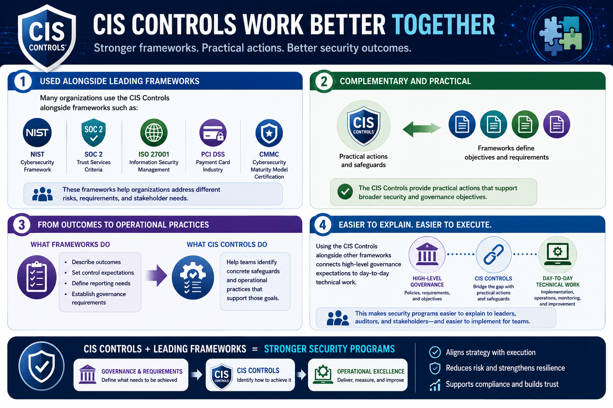

What Are the CIS Controls?
Relationship to Other Frameworks
Connecting to LMS... Progress: in progress
Version 1.0 | Date: 2026-06-16 | Educational guidance for understanding CIS Controls concepts.

Narration
Many organizations use the CIS Controls alongside frameworks such as NIST, SOC 2, ISO 27001, PCI DSS, and CMMC.
The controls often complement these frameworks by providing practical actions that support broader security and governance objectives.
Frameworks may describe outcomes, control expectations, or reporting needs. The CIS Controls can help teams identify concrete safeguards and operational practices that support those goals.
Using the controls alongside other frameworks can make security programs easier to explain because it connects high-level governance expectations to day-to-day technical work.